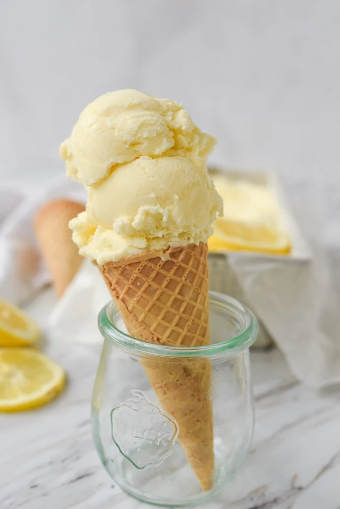

Lemon Ice Cream

Description
I am a huge ice cream fan and it is usually my dessert of choice.
As you know one of my other loves is lemon so coming up with the perfect lemon ice cream was a pretty big priority for me. I think I may have found it.
The perfect ice cream needs to have just the right amount of lemon. It can’t be too tart or too sweet. It needs to be just right, and this one is just that.
Ingredients
- Lemons. You will use the juice and the zest.
- Sugar. Granulated sugar
- Eggs
- Whole Milk
- Heavy Whipping Cream
- Vanilla Extract
- Salt
Steps
- Combine the eggs, sugar, salt, lemon juice and zest and one cup of milk.
- Cook over medium heat until it comes to a simmer. After cooking the mixture you may want to pour it through a strainer to remove the lemon rind and any pieces of egg that might not have gotten mixed in. There are times when I don’t do this though and my ice cream always turns out great.
- After straining put it in the refrigerator to chill.
- After it has chilled, just process according to the directions of your ice cream maker.
- Place ice cream into freezer after it has processed to allow it to set up and harden a bit.